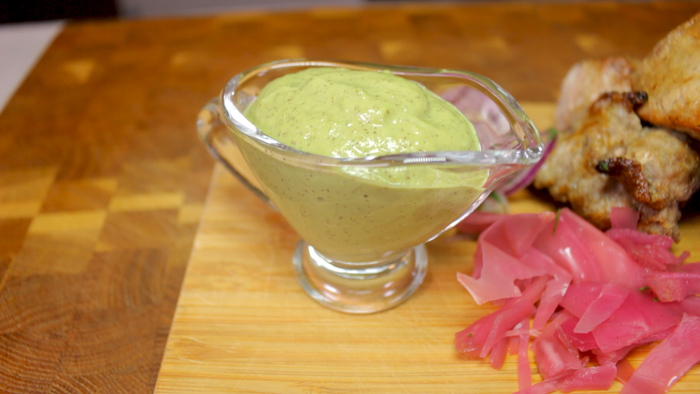

Зеленый соус к шашлыку

Ингредиенты:
- киви - 4 шт.
- грецкие орехи очищенные - 50 гр.
- лимон - 1 шт.
- чеснок - 2 зубчика
- мед - 1 ст.ложка
- масло оливковое или подсолнечное - 2 ст.ложки
- соль и перец по вкусу
Приготовление:
1. Очистить киви от кожуры. Положить в блендер.
2. Выжать лимон в чашку, чтобы убрать если будут косточки.
3. Сок лимона и остальные инградиенты высыпать в блендер.
4. Смешать и взбить блендером до получения однородной эмульсии.